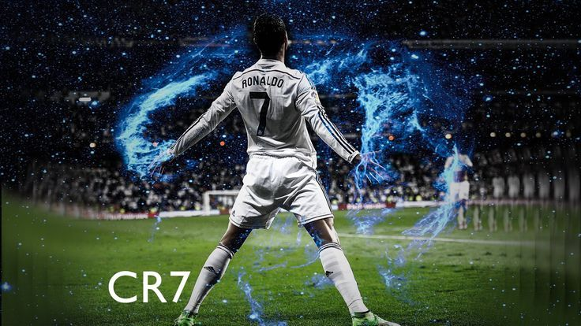

About the G.O.A.T

Cristiano Ronaldo dos Santos Aveiro is a Portuguese public figure known worldwide, not just for football, but also for his lifestyle and personality. He is often recognized for his exceptional discipline and commitment to fitness. Even off the field, Ronaldo maintains a rigorous training routine, with a strong focus on diet, recovery, and physical well-being. His dedication to staying in peak condition is something many fans admire and try to emulate.
He comes from a close-knit family and is also a father. Family plays an important role in his life, and he often shares moments with his children and loved ones on social media. Speaking of which, Ronaldo is incredibly popular online—he's one of the most followed people on platforms like Instagram, where he gives glimpses into his life, workouts, fashion, and sometimes his travels or promotional work.
Beyond sports, Ronaldo has built a personal brand around his name. His CR7 label includes clothing, footwear, fragrances, and even luxury hotels. He has a strong interest in fashion and style, which reflects in his public appearances and personal projects. Despite his glamorous image, those close to him often describe him as hardworking, ambitious, and extremely focused on his goals.
Ronaldo also speaks multiple languages, including Portuguese, Spanish, and some English, which helps him connect with fans and media all over the world. While he’s very competitive and confident, he’s also known for his charity work and his efforts to use his platform to support causes he believes in.
The Rise of the Machine

Cristiano Ronaldo was born on February 5, 1985, in Funchal, the capital city of Madeira, a small island off the coast of Portugal. He was the youngest of four children in a humble family. His father, José Dinis Aveiro, worked as a municipal gardener, while his mother, Maria Dolores dos Santos Aveiro, was a cook. Despite their modest means, his family was close and supportive, and they played a significant role in shaping his early years. From a young age, Ronaldo showed incredible energy and enthusiasm, often playing football in the streets of his neighborhood. Growing up on an island far from the spotlight, few could have predicted that he would one day become a global icon.
__________________________________________________________________________________________________________________________________________

Birth: February 5, 1985
Name: Cristiano Ronaldo dos Santos Aveiro
Sport: Football/Soccer
Preferred foot: Right
Birth-place: Portugal
Age: 40
Height: 1.85m
Weight: 80kg
Career

Cristiano Ronaldo's football career is a story of evolution, excellence, and global impact. He began playing professionally with Sporting CP in Portugal, where his raw speed, footwork, and confidence on the ball stood out even as a teenager. It was during a friendly match against Manchester United that his talent truly turned heads—so much so that Sir Alex Ferguson signed him shortly after. At Manchester United, Ronaldo matured rapidly. He sharpened his decision-making, improved his physical strength, and developed into a prolific attacker. He won three Premier League titles, a Champions League trophy, and his first Ballon d'Or in 2008.
In 2009, he made a record-breaking transfer to Real Madrid, where his career soared to incredible heights. Over nine seasons in Spain, Ronaldo became the club’s all-time leading scorer, netting over 450 goals. He won two La Liga titles and four Champions League trophies with Real Madrid, forming one of the most feared attacking trios in football alongside Benzema and Bale. His rivalry with Lionel Messi during this era became iconic. His performances were often decisive, with Ronaldo consistently scoring in high-stakes matches, further solidifying his place as one of the greatest players of all time.
In 2018, he took on a new challenge in Italy, joining Juventus and helping them win multiple Serie A titles while still maintaining top scoring stats. Even as he entered his late 30s, Ronaldo continued defying age, returning to Manchester United in 2021 and then embracing a new chapter with Al-Nassr in Saudi Arabia. Despite changing clubs, his reputation as a relentless goal scorer remained undiminished, and he continued to contribute at the highest levels of football.
Beyond club football, Ronaldo has been a crucial figure for the Portugal national team. He led his country to victory in the 2016 UEFA European Championship, securing their first major international trophy, and followed that up with a victory in the UEFA Nations League in 2019. Whether in England, Spain, Italy, or now Saudi Arabia, Ronaldo has left a lasting legacy in every league he’s played in—defined by his fierce competitiveness, unmatched physicality, and consistent excellence.
Education
Cristiano Ronaldo's education has often been discussed alongside his exceptional football career, but it’s important to note that he was more focused on his athletic development from a very young age. Born into a working-class family, Ronaldo's early years were shaped by a passion for football, which took precedence over formal education. As a child, he attended a local school in Madeira, where he was described as a typical student—bright, but increasingly distracted by his love for football. His focus on the sport became so intense that, by the time he was 12, he made the bold decision to move to Lisbon, leaving his family behind to join Sporting CP's youth academy.
This was a pivotal moment in his life, and it meant that Ronaldo's formal schooling took a backseat to his football training. At Sporting CP, he trained intensely and focused on his skills, working under the guidance of some of the best coaches. While he did complete his basic education, his commitment to football was so strong that it overshadowed his academic interests. Ronaldo himself has said that he wasn't particularly passionate about schoolwork, but he was dedicated to his football career, which eventually led him to professional success at a very young age.
Although Ronaldo didn't pursue higher education, his story shows how he channeled his energy and determination into football, which proved to be a wise choice given his success. Off the field, however, Ronaldo has shown an interest in business, branding, and philanthropy, where he has educated himself and become a successful entrepreneur. Through his CR7 brand, investments, and charity work, Ronaldo continues to evolve beyond the football field, showcasing a different kind of learning and growth.
Achievements
Cristiano Ronaldo’s football career is a showcase of excellence, marked by an extraordinary list of awards and records that few players in history can rival. At the heart of his individual success are the five Ballon d’Or titles he has won, awarded in 2008, 2013, 2014, 2016, and 2017. These awards honor him as the best player in the world during those years, reflecting not just his talent but his consistency and drive. He has also received multiple FIFA Best Player and UEFA Player of the Year awards, further highlighting his dominance across different leagues and seasons. His ability to stay at the top level year after year is one of the defining traits of his career.
As a goal scorer, Ronaldo has broken countless records. He is the all-time leading scorer in the UEFA Champions League, a competition he has won five times—once with Manchester United and four times with Real Madrid. He also holds the record for the most goals in a single Champions League season and was the first player to score in three Champions League finals. Across his career, he has won numerous Golden Boots and Golden Shoes, awarded to the top scorers in European leagues, proving his attacking brilliance on the pitch. His time at Real Madrid, in particular, saw him set the club record for most goals scored, with over 450 goals in just nine seasons.
Beyond club football, Ronaldo has made history with the Portugal national team. He played a key role in leading Portugal to their first-ever major tournament victory by winning UEFA Euro 2016, followed by another major international trophy with the UEFA Nations League in 2019. He is the highest-scoring player in international men’s football, surpassing 120 goals, and has earned over 200 caps for his country—another rare achievement. His leadership and performances on the international stage have been just as impressive as his club success.
What makes his achievements even more remarkable is the range of leagues he has conquered. Ronaldo has won major league titles in England with Manchester United, in Spain with Real Madrid, and in Italy with Juventus. Very few players in football history have found success at this level across multiple countries. On top of his athletic achievements, Ronaldo has also received honors like the Portuguese Order of Merit and various other national recognitions, further proving his influence both on and off the field.
In total, Cristiano Ronaldo has amassed hundreds of career trophies, medals, and records—making him one of the most awarded athletes of all time. His career isn’t just measured in goals or titles, but in the legacy he continues to build as one of the most driven, hardworking, and successful footballers the world has ever seen.
Clubs

Cristiano Ronaldo’s journey through club football is one of ambition, growth, and remarkable success across some of the world’s biggest teams. His professional career began at Sporting CP, a top Portuguese club where his talent quickly caught attention. He joined their youth academy in Lisbon at the age of 12, and by 16, he was already playing for the senior team. His explosive speed, skill, and confidence stood out even then, and it didn’t take long before bigger clubs came calling. It was a standout performance in a friendly match against Manchester United that truly launched his international breakthrough.
In 2003, Ronaldo signed with Manchester United, where he spent six incredible years. Under the guidance of Sir Alex Ferguson, he transformed from a promising young winger into a global star. He helped the club win three consecutive Premier League titles, an FA Cup, two League Cups, and the UEFA Champions League in 2008. It was during his time in England that he won his first Ballon d’Or and established himself as one of the best players in the world. His style became a mix of flair and precision, and his work ethic began to gain global recognition.
In 2009, Ronaldo made a then-world-record transfer to Real Madrid. This chapter of his career is often considered his most iconic. Over nine seasons with the Spanish giants, he broke records left and right. He became the club’s all-time leading goal scorer with over 450 goals in just 438 games—an astonishing rate. Ronaldo helped Real Madrid win two La Liga titles, two Copa del Rey trophies, and four Champions League titles, including an historic three-peat from 2016 to 2018. His rivalry with Lionel Messi during this period fueled global debates and pushed both players to legendary heights.
In 2018, he moved to Juventus in Italy, proving once again that he could adapt and thrive in a new league. During his time in Turin, he won two Serie A titles and was one of the league’s top scorers. Even as he entered his mid-30s, his goal-scoring form never wavered. In 2021, Ronaldo made a sensational return to Manchester United for a second spell, where he continued to deliver important goals and moments, despite a less stable team environment.
In 2023, Ronaldo surprised the football world by joining Al-Nassr in Saudi Arabia, marking the start of a new chapter in a growing football market. While the league is less competitive than the European elite, Ronaldo’s influence and performance continued to draw global attention, both for the club and for the league’s rising profile.
Across every club he’s played for, Ronaldo has not just delivered results—he’s changed the game. His impact has been felt both on the pitch and off it, turning him into a global ambassador for the sport. Whether it’s in Portugal, England, Spain, Italy, or now Saudi Arabia, every club he’s joined has been left with unforgettable memories and a legacy of greatness.
Passion
Cristiano Ronaldo’s passion for football runs deeper than just the pursuit of fame or trophies—it has always been the driving force behind everything he does. From the early days playing barefoot in the streets of Madeira to competing on the biggest stages in the world, Ronaldo’s love for the game has never wavered. As a child, he would spend hours with a ball at his feet, often skipping meals or staying out late just to practice. Football wasn’t just a sport for him—it was an escape, a dream, and a purpose. His dedication from such a young age made it clear that this wasn’t just talent; it was pure obsession backed by relentless determination.
What sets Ronaldo apart from so many other great players is not only his skill but his unmatched hunger to improve. Even after achieving everything most athletes could ever hope for, he trains like someone still fighting for a place in the starting lineup. He’s known for arriving early to training, staying longer than anyone else, and pushing his body to the limit. His intense workout routines, strict diet, and mental discipline all reflect how seriously he takes the game. To him, football is not just a job—it’s a lifestyle, and one that he treats with immense respect.
Even now, after two decades at the top, that fire inside him still burns just as bright. Whether he's playing in front of 80,000 fans or training in silence, Ronaldo gives it everything. His passion isn’t just visible in his performances but also in the way he celebrates goals, lifts his teammates, and takes losses personally. He plays with emotion, energy, and pride—every match is a chance to prove something. It’s this deep-rooted love for the sport that continues to inspire millions of fans around the world, reminding them that true greatness begins with passion.
__________________________________________________________________________________________________________________________________________